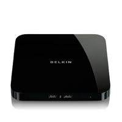
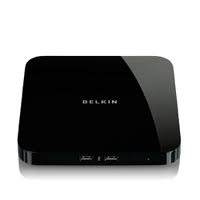
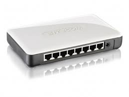
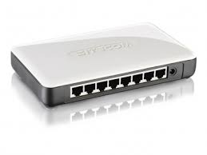

Hub and Switch
In informatica e telecomunicazioni, nella tecnologia delle reti informatiche, un hub (letteralmente in inglese fulcro, mozzo, elemento centrale) rappresenta un concentratore, ovvero un dispositivo di rete che funge da nodo di smistamento dati di una rete di comunicazione dati organizzata prevalentemente con una topologia a stella.


A cosa serve?
Gli Hub sono dei nodi nei quali i pacchetti vengono trasmessi verso tutti i computer connessi, sarà poi compito dei computer verificare se i dati trasmessi appartengono o meno al computer. Gli Hub ormai sono scomparsi sul mercato per via delle loro prestazioni inferiori agli switch e per il fatto che i dati trasmessi possono essere intercettati con particolari software chiamati sniffer di rete.
Lo switch è un dispositivo che permette di connettere due segmenti di una stessa rete domestica o diversi sistemi di rete.Uno switch è simile ad un hub, salvo che registra gli indirizzi IP dei computer inseriti in esso. Quando riceve un messaggio, lo trasmette soltanto al destinatario. Gli switch riducono le trasmissioni di traffico inutili facendo così in modo che la vostra rete sia ad alto rendimento.

